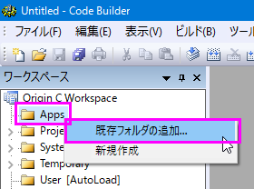
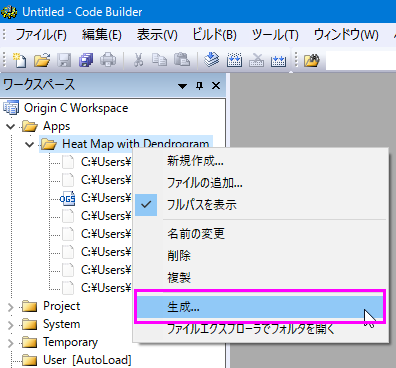
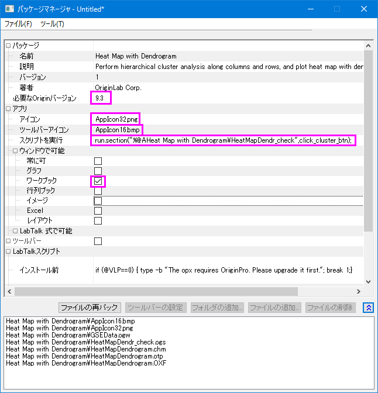

Origin向けアプリの作成と更新
Create-Update-Apps
概要
アプリ は、特別なグラフ作成や分析タスクを行うためのカスタムアプリケーションです。OriginLab社のWebサイトのファイル交換の場から、必要なアプリをダウンロードして、インストールします。ユーザの皆様は、「ファイル交換の場」で、アプリを作成して、シェアすることも可能です。このチュートリアルでは、アプリの作成して、アップロード、および編集する方法を解説します。
学習する項目
このチュートリアルでは、以下の項目について解説します。
- アプリの作成
- 「ファイル交換の場」サイトにアプリをアップロード
- アプリを編集して、承認のために提出
アプリファイルの指定
アプリがサポートしているファイルやアプリに必要なファイルは、次の通りです。
アイコンファイル
- アイコンファイル (必須)
- これは、32*32ピクセルのpngファイルになっている必要があります。このアイコンは、Originのアプリギャラリーウィンドウに表示されます。
- 小さいアイコンファイル (オプション)
- これは、16*16ピクセルで16色（4bits)のbmpファイルである必要があります。表示: ツールバー: アプリのボタングループから操作できます。ツールバーに追加して、ボタンとして使うことが可能です。
プログラムファイル
X-Function, *.ogs, *.c, *.h, DLLファイルがサポートされています。Xファンクションのファイル名は、「*.c」と同じであってはいけません。
その他のファイル
「その他のファイル」には、文書(*.chm, *.pdf)、画像ファイル、サンプルデータなどがあります。
アプリの作成
1.AppsフォルダをインストールしたOriginのAppDataの下に置きます。以下のコマンドを、「コマンド/スクリプト」ウィンドウに入力します。
%@A=; // 出力は、例えば、次のようになります。C:\Users\XXX\AppData\Local\OriginLab\Apps\
2.ステップ1のパスでフォルダを開き、この場所にサブフォルダを作成します。ここで、サブフォルダ名は、アプリ名として使っているものと同じにします。全てのアプリ用ファイルをこのサブフォルダに置きます。
3.Originを起動して、インターフェイスにあるコードビルダ ボタンをクリックします。
ボタンをクリックします。
4.コードビルダウィンドウで、左のワークスペースにあるAppsフォルダで右クリックします。ショートカットメニューから既存フォルダの追加を選択して、Step2で作成したフォルダを追加します。ワークスペースパネルのフォルダを広げます。フォルダの全てのファイルがリストアップされます。
Appフォルダが空の場合は、ショートカットメニューから新規作成を選択して、Appsフォルダに新しいサブフォルダを作成できます。ファイルで右クリックすると、ファイルを削除する選択が可能です。フォルダで右クリックして、現在のフォルダに無いファイルを追加することができます。
- 
5.コードビルダのワークスペースパネルで、新しく作成したAppフォルダで右クリックして、ショートカットメニューから生成を選択します。パッケージマネジャダイアログが開きます。
- 
6.パッケージマネジャダイアログで、以下のように操作します。
- パッケージブランチ：
- 名前
- 名前の部分は、変更してはいけません。変更してしまうと、フォルダー名も変わってしまいます。
- 説明
- ここで、アプリの説明を入力します。この説明は、「ファイ交換の場」ウェブの概要の部分に表示されます。
- バージョン
- 現在のAppバージョンを設定します。例えば、「1.11.」のように、小数点以下2桁の数値を使うことができます。
- 必要なOriginバージョン
- 必要なOriginバージョンOrigin2016では、「2016」の代わりに「9.3」と入力する必要があります。
- アプリブランチ
- アイコン
- アプリギャラリウィンドウに表示されているアイコンのファイル名にします。
- アイコン（小さい）
- ツールバーに使われている小さいアイコンのファイル名にします。
- スクリプトを実行
- アプリアイコンをクリックして、LabTalkスクリプトで実行します。Xファンクションダイアログを開いて、「xfname -d;」のようにスクリプトを書くことができます。スクリプトポイントをogsファイルのセクションにすることも可能です。
- ウィンドウで可能
- アプリが有効なアクティブなウィンドウタイプを指定します。例えば、LaTex アプリ、グラフウィンドウをアクティブにします。
 | これを行うことはめったにありませんが、LabTalk式で可能ノードを展開し、LabTalk算術式の横に次のように入力して、Notesウィンドウでアプリを有効にするように指定できます。
note.active=1
|
- LabTalkスプリクトブランチ
- インストール前後と初期化前に、LabTalkスクリプトを指定します。
- 
7.パッケージマネジャで設定をした後、メニューからファイル：新規保存をクリックします。.opxファイルが保存されます。opxは、フォルダー名と異なっていても構いません。Appのopxファイルの準備ができました。ファイルをドラッグ＆ドロップして、Originにインストールします。なお、ファイルをドラッグアンドドロップする時には、Originを管理者として実行で起動しないでください。
「ファイル交換の場」サイトにアプリをアップロード
アプリパッケージファイルが準備できたら、「ファイル交換の場」ウェブサイトにアップロードして、公開します。次のように操作します。
- 「ファイル交換の場」を開き、左の下にあるSubmit a fileをクリックして、Submit Fileページを開きます。アプリとしてファイルタイプを選択して、ファイル・カテゴリー：、Originによって作成：などのその他の必要な情報を入力します。必要なOrigin最低バージョン、タイトル、サマリーなどの、アプリパッケージの情報は、自動で抽出されます。
- アプリのopxパッケージファイルをアップロードして、画像のスクリーンショットを取ります。送信ボタンをクリックして、アプリを送信し、「ファイル交換の場」ツールページを作成します。
- 作成してたウェブページからopxファイルをダウンロードできるようになり、Originにドラッグ＆ドロップで入れて、テストできます。ダウンロードプロセス中に、パッケージIDをopxに指定します。
- アプリのウェブページを継続して編集できます。完了したら、アップデートボタンをクリックすると、ウェブページを更新できます。
- アプリを公開する準備ができたら、更新フォームの下にある承認のリクエストボタンを押します。アプリが承認されると、OriginLabからメールでお知らせがあります。承認のステータスは、OriginLab Tested、OriginLab Approvedと示されたファイルのアップデートページにも表示されます。
- アプリが承認されると、メニューのツール：ファイル交換の場アプリに、自動で表示されます。
アプリの編集
アプリ設定の変更
- Originメニューからツール：グループフォルダマネジャを選択します。パッケージマネジャーダイアログボックスのツール: インストールされたパッケージをブラウズを選択します。アプリを選択して、開くボタンをクリックします。
- ダイアログで、設定を変更できます。フォルダのファイルを変更すると、ファイルの再パックボタンをクリックできるようになります。
- ファイル: 保存をクリックして、アプリopxパッケージに保存できます。
アプリファイルフォルダのファイルの追加・削除・変更
ファイルを追加、ファイルを削除、ファイル名を変更する場合は、コードビルダパネルのワークスペースのアプリフォルダを右クリックして、ショートカットメニューから対応するオプションを選択します。ショートカットメニューから生成をクリックして、アプリパッケージを再生成します。
ファイルを削除したり、ファイル名を変更する際には、もし使用されていなくても、元のファイルをアプリフォルダのパスの下に保存します。C:\Users\XXX\AppData\Local\OriginLab\Apps\ そうでないと、生成ボタンをクリックしたときに、opxの既存の設定をパッケージマネジャーダイアログに保存できません。
編集したOPXを「ファイル交換の場」ページにアップロード
Originのウェブサイトにログインして、アプリを作成した「ファイル交換の場」ページを開き、更新したopxファイルを「ファイル交換の場」にアップロードします。現在のアプリのバージョンでアップデートしたものであるという「ノート」を、必要に応じて、ウェブページに掲載します。ユーザはメニューのツール: ファイル交換の場アプリ: * YourApp (インストール済) から、このアップデートを知ることができます。このアプリが既にインストール済の場合は、アスタリスクのシンボル「* 」がついています。
OriginLabからのリクエストの承認
アプリの「ファイル交換の場」サイトの承認のリクエストボタンをクリックして、OriginLabからの連絡をお待ちください。